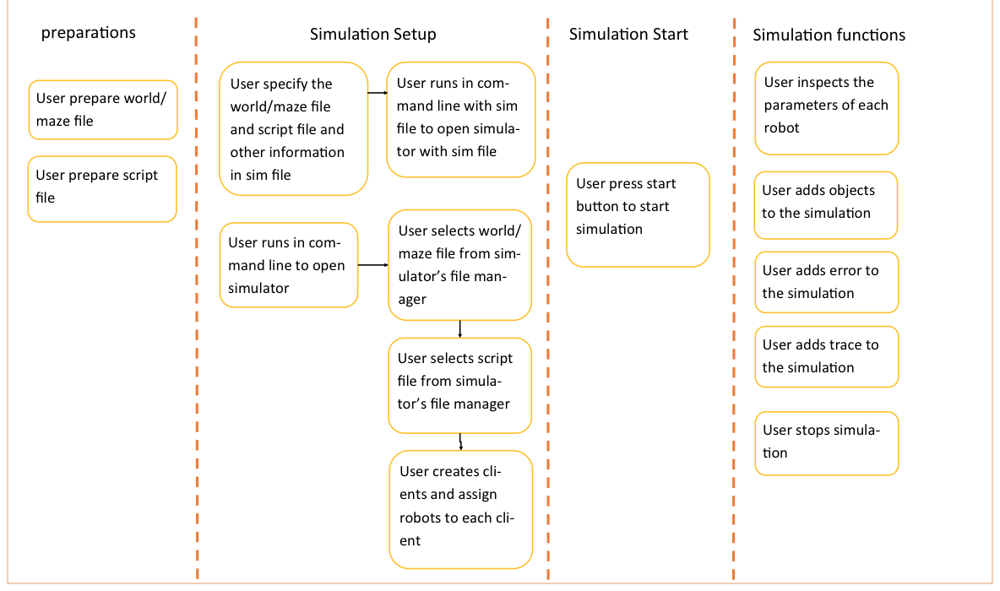

Unit:
CITS5501
Project:
Designing a mobile robot simulator based on game engine Unity3D
Client:
Dr Thomas Braunl, thomas.braunl@uwa.edu.au
High influence, high involvement, he will require a working prototype for his 2017 semester 2 units
Mentor:
Dr Mehdi Ravanabakhsh, mehdi.ravanbakhsh@mapizy.com
Team Supervisor:
Ghulam Mubashar Hassan, ghulam.hassan@research.uwa.edu.au
High influence, low involvement, oversees and assesses development of project
Project Team:
Robot VR Team: High influence and high involvement
| Name | Student Number | |
|---|---|---|
| Joel Frewin | 21306458 | joelfrewin@gmail.com |
| Eric Zhang | 21656304 | 21656304@student.uwa.edu.au |
| Leon Zhidong | 21551835 | 21551835@student.uwa.edu.au |
| Ridge Shrubsall | 21112211 | ridge.shrubsall@gmail.com |
| Travis Povey | 20518515 | tgpovey@gmail.com |
| Spandana Vadde | 21779055 | 21779055@student.uwa.edu.au |
Users:
Students: low influence, high involvement, will be beta testing the product in second semester
Research Students: low influence, high involvement, will use the simulation for research and possibly expand on code.
This document presents the desired requirements for developing a new mobile robot simulator based on game engine Unity 3D. In this, we describe the scope, purpose, functional and non-functional requirements of a mobile robot in the simulation environment. The primary goal of a mobile robot is to design and implement autonomous systems. The word autonomy is defined as the capability of a mobile robot to perform tasks which increases the complexity of game. For example, robot wants to move from point A to point B in the simulation environment. To do this task, robot needs to have some information about the simulation environment and knowledge about its own capabilities to sense, move and to execute motion tasks in such environment. The main elements of a robot simulation environment are Platform, components, agent and programming environment.
Platform:
Platform is a piece of software where smaller application programs are developed. Some of the elements in the platform are the sensors, the actuators, the computer, the operating system and any software relevant for the robot operation.
Components:
The components that functions as part of a robot or system and that operates in an independent way.
Agent:
The combination of the software and the hardware in a robot to perform the tasks allocated to it.
Programming Environment:
The tools used for the implementation of programs to execute the robotic tasks.
The scope of our project is to develop a new mobile robot simulator based on game engine Unity 3D. This simulator will have 3D models of the R&A Lab’s existing robots (SoccerBot, LabBot, Submarine, etc.) and allow the writing of application programs simplified API of RoBIOS 7.
The purpose of our project is to provide a simulation environment which encapsulates the functionality of existing eyebot robots. The simulator must be able to interpret the existing RoBIOS format compiled in C. The product must be cross platform (Windows, OSX, Linux compatible) and must be user friendly. The simulation must be usable in batch mode or through a user interface. Users can choose between a standard user interface or an interactive virtual reality UI.
Our team is using an agile software development method, Scrum and each Sprint has a duration of one week, we have team meetings with our mentor on each Wednesday, in which we summaries what has been done over the past week, and what progress has been made. In addition, each Friday we have client meeting, in which prototypes with the newest added features or improvements are presented to client and feedbacks are received from client, before each client meeting, meeting agenda is prepared, and after each meeting, the meeting minutes are logged and uploaded with next-step objectives. In such manner, our progress is visible to our client, and traceable through meeting minutes in shared Google Drive, and thus ensures we are always on schedule of delivery.
Team communicates through Slack, where all announcements are made, and difference entrances of topics are created for better organization and archive. Time Logging is kept as spreadsheet on shared Google Drive, of which the access is given through Slack. Each week each team member will log their time in Time Logging spreadsheet to record their contribution to the project.
Two separate GitHub repositories are kept for our project, one is for unity server files and one for client files. Through these GitHub repositories, each change and update are kept for future reference.
This simulator will let users to simulate the robots’ execution of functions specified in RoBIOS file, it accepts and runs customized script file written in C, and simulates robot behaviours of each command, user can select or specify a world or maze file as input, simulator will build the simulation environment accordingly, user can also create different clients and assign to each one any number and kind of robots from the robot models, and these robots in the same scene can run concurrently and communicate with each other.
User can inspect the robots, add objects, add errors to robots and stop the simulation at any time during simulation, below is a flow chart showing the relationship of these functions.
Please refer the following compatibility table:
| Operating systems | OS Version | Prerequisites | Comands to run in terminal |
|---|---|---|---|
| Windows | Windows 7,8,10 | Install Cygwin and X11 | |
| Mac OS | 10.10.X | Install Xcode, Cygwin and Xquartz | |
| Linux |
Assumptions:
Dependencies:
| Feature | Simplicity | Importance | Priority |
|---|---|---|---|
| Simulator Functionality | |||
| Load Robot | |||
| Load Client | |||
| Load World | |||
| Load Object | |||
| Speedup Simulation | |||
| Slowdown Simulation | |||
| Pause/Resume Simulation | |||
| Robot Functionality | |||
| Basic Driving | |||
| Velocity/Omega Driving | |||
| Camera Capture | |||
| Servo Movement | |||
| Radio Control | |||
| User Interface | |||
| View Scene | View Robot Parameters | Edit Robot Parameters | |
| Virtual Reality | |||
| scene viewing | |||
| object interaction | |||
Security
Compatibility
The product must be cross compatible (Windows, OSX, Linux), to allow all students to have easy access to the simulator.
Usability
Performance
Reliability
Upgradability
Interaction
{kind=link}